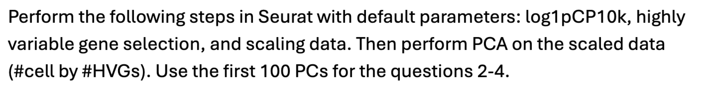
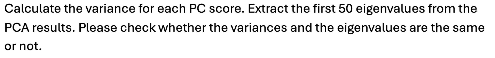
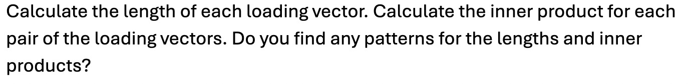
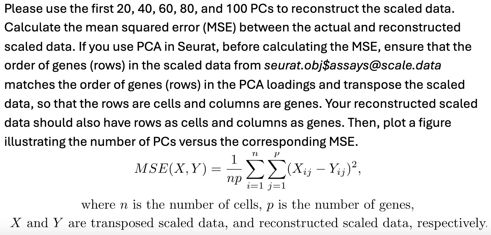
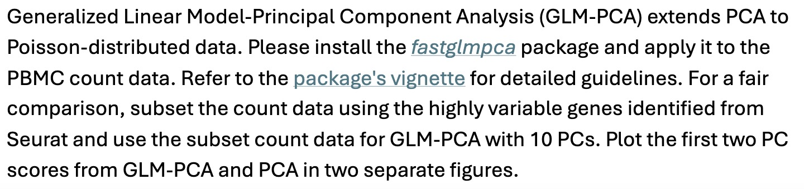
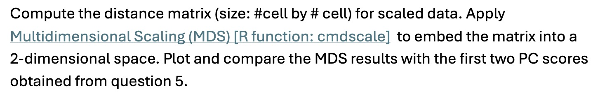

library(Seurat)
library(ggplot2)
library(fastglmpca)
library(ggpubr)Stat M254 Homework 1
Due May 18 @ 11:59PM
Problem 1

Answer:
cell_meta <- read.csv("../hw1/data/pbmc.csv", row.names = 1)pbmc <- CreateSeuratObject(counts = cell_meta, project = "pbmc")pbmc <- NormalizeData(pbmc,
normalization.method = "LogNormalize",
scale.factor = 10000)pbmc <- FindVariableFeatures(pbmc, selection.method = "vst",
nfeatures = 2000)pbmc <- ScaleData(pbmc)pbmc <- RunPCA(pbmc,
npcs = 100)
print(pbmc[["pca"]], dims = 1:5, nfeatures = 5)PC_ 1
Positive: LYZ, CST3, S100A9, FCN1, LST1
Negative: SLC25A37, ZNF302, SIAE, RP11-382A20.3, TRBC2
PC_ 2
Positive: CD79A, MS4A1, IGHM, HLA-DRA, CD74
Negative: NKG7, CCL5, GZMA, IL32, KLRD1
PC_ 3
Positive: ARL17B, CD7, MT-ND4, MT-ND3, RPS2
Negative: ZNF302, SLC25A37, RP11-382A20.3, KCNJ3, OGG1
PC_ 4
Positive: RPL10L, AC092669.3, RP11-346D14.1, ABCG1, PPIAL4A
Negative: RP11-382A20.3, PRR26, OGG1, FLVCR1, NCALD
PC_ 5
Positive: IL7R, LEF1, CCR7, MTRNR2L12, TRAC
Negative: NKG7, GNLY, FGFBP2, GZMB, PRF1 DimHeatmap(pbmc, dims = 1:5, cells = 500, balanced = TRUE)
VizDimLoadings(pbmc, dims = 1:2, reduction = "pca")
Problem 2

Answer:
pca_embeddings <- Embeddings(pbmc[["pca"]])variance <- rep(0, length(pca_embeddings[1,]))for (i in 1:length(variance)){
variance[i] <- var(pca_embeddings[, i])
}eigenvalue <- Stdev(object = pbmc[["pca"]])^2all(variance == eigenvalue)[1] FALSEq3compare <- data.frame(variance = variance, eigenvalue = eigenvalue,
diff = variance - eigenvalue)q3compare variance eigenvalue diff
1 52.959572 52.959678 -1.061023e-04
2 26.109211 26.109217 -5.182630e-06
3 23.546543 23.551844 -5.301159e-03
4 19.209789 19.214504 -4.714766e-03
5 12.298174 12.298190 -1.578224e-05
6 9.339382 9.340795 -1.413042e-03
7 6.760516 6.760956 -4.394226e-04
8 6.343595 6.352451 -8.856631e-03
9 5.982336 5.982454 -1.177022e-04
10 5.456865 5.459257 -2.391974e-03
11 4.816044 4.816803 -7.590359e-04
12 4.718671 4.718808 -1.367360e-04
13 4.208329 4.208517 -1.874376e-04
14 3.538561 3.547837 -9.275505e-03
15 3.140492 3.143579 -3.087524e-03
16 2.994447 2.995786 -1.339320e-03
17 2.709192 2.710367 -1.175071e-03
18 2.499338 2.499342 -3.927729e-06
19 2.368109 2.368112 -2.556356e-06
20 2.322102 2.322649 -5.473151e-04
21 2.291312 2.292233 -9.204167e-04
22 2.219820 2.219821 -6.089406e-07
23 2.177371 2.178091 -7.199595e-04
24 2.144491 2.144683 -1.915031e-04
25 2.060014 2.060019 -5.353949e-06
26 2.020573 2.020614 -4.045216e-05
27 1.985210 1.985285 -7.513202e-05
28 1.954558 1.954885 -3.271959e-04
29 1.949991 1.950015 -2.366589e-05
30 1.918671 1.918720 -4.950008e-05
31 1.894105 1.894107 -2.438895e-06
32 1.888364 1.888365 -3.278117e-07
33 1.878722 1.878793 -7.118644e-05
34 1.867485 1.867624 -1.392583e-04
35 1.857632 1.857739 -1.076132e-04
36 1.852222 1.852229 -7.571709e-06
37 1.844459 1.844475 -1.603740e-05
38 1.838463 1.838483 -2.032434e-05
39 1.830035 1.830037 -2.893226e-06
40 1.825890 1.825899 -8.967448e-06
41 1.813362 1.813477 -1.150260e-04
42 1.809622 1.809641 -1.984691e-05
43 1.797085 1.797094 -9.507679e-06
44 1.792407 1.792514 -1.073090e-04
45 1.790533 1.790658 -1.253025e-04
46 1.783110 1.783116 -6.110519e-06
47 1.779441 1.779446 -4.403495e-06
48 1.777556 1.777781 -2.247760e-04
49 1.769895 1.769896 -1.557190e-07
50 1.763529 1.763545 -1.524797e-05
51 1.759355 1.759433 -7.793110e-05
52 1.752672 1.752910 -2.382383e-04
53 1.746120 1.746123 -3.760932e-06
54 1.742989 1.743003 -1.376711e-05
55 1.737653 1.737664 -1.156961e-05
56 1.732502 1.732747 -2.442071e-04
57 1.729368 1.729377 -8.779967e-06
58 1.723811 1.723819 -7.696645e-06
59 1.720104 1.720281 -1.776179e-04
60 1.713684 1.713731 -4.749110e-05
61 1.712324 1.712372 -4.825807e-05
62 1.707460 1.707529 -6.894565e-05
63 1.703889 1.703924 -3.470497e-05
64 1.702108 1.702122 -1.481171e-05
65 1.696174 1.696252 -7.838671e-05
66 1.691380 1.691383 -3.325142e-06
67 1.687259 1.687316 -5.743489e-05
68 1.685454 1.685832 -3.782496e-04
69 1.680331 1.680572 -2.408300e-04
70 1.671841 1.672165 -3.236091e-04
71 1.667134 1.667221 -8.689388e-05
72 1.662573 1.663012 -4.397950e-04
73 1.659660 1.659751 -9.092314e-05
74 1.654343 1.654517 -1.739994e-04
75 1.652484 1.652484 -6.405936e-07
76 1.649681 1.649831 -1.501515e-04
77 1.644487 1.644490 -3.267916e-06
78 1.639929 1.639996 -6.760404e-05
79 1.637633 1.637648 -1.563023e-05
80 1.633793 1.633957 -1.645798e-04
81 1.629687 1.629696 -8.606805e-06
82 1.625544 1.625580 -3.524298e-05
83 1.623479 1.623669 -1.894570e-04
84 1.612916 1.612917 -1.825592e-06
85 1.610929 1.611343 -4.131925e-04
86 1.607491 1.607862 -3.709147e-04
87 1.607542 1.607625 -8.324600e-05
88 1.605083 1.605110 -2.708958e-05
89 1.600075 1.600106 -3.114925e-05
90 1.596304 1.596406 -1.025034e-04
91 1.594686 1.594687 -1.262892e-06
92 1.588466 1.588768 -3.020304e-04
93 1.586337 1.586375 -3.815192e-05
94 1.581559 1.581630 -7.169713e-05
95 1.580547 1.580637 -9.017632e-05
96 1.579305 1.579354 -4.874535e-05
97 1.576060 1.576224 -1.633184e-04
98 1.572834 1.572876 -4.180123e-05
99 1.569618 1.569632 -1.414533e-05
100 1.564984 1.565037 -5.368850e-05Their differences are very close to 0. It is reasonable to conclude they are the same and the slight difference is due to the rounding error of the numerical precision.
Problem 3

Answer:
loading_100 <- Loadings(object = pbmc[["pca"]])length(loading_100[1,])[1] 100for (i in (1:length(loading_100[1, ]))){
print(norm(loading_100[, i], type="2"))
}[1] 1
[1] 1
[1] 1
[1] 1
[1] 1
[1] 1
[1] 1
[1] 1
[1] 1
[1] 1
[1] 1
[1] 1
[1] 1
[1] 1
[1] 1
[1] 1
[1] 1
[1] 1
[1] 1
[1] 1
[1] 1
[1] 1
[1] 1
[1] 1
[1] 1
[1] 1
[1] 1
[1] 1
[1] 1
[1] 1
[1] 1
[1] 1
[1] 1
[1] 1
[1] 1
[1] 1
[1] 1
[1] 1
[1] 1
[1] 1
[1] 1
[1] 1
[1] 1
[1] 1
[1] 1
[1] 1
[1] 1
[1] 1
[1] 1
[1] 1
[1] 1
[1] 1
[1] 1
[1] 1
[1] 1
[1] 1
[1] 1
[1] 1
[1] 1
[1] 1
[1] 1
[1] 1
[1] 1
[1] 1
[1] 1
[1] 1
[1] 1
[1] 1
[1] 1
[1] 1
[1] 1
[1] 1
[1] 1
[1] 1
[1] 1
[1] 1
[1] 1
[1] 1
[1] 1
[1] 1
[1] 1
[1] 1
[1] 1
[1] 1
[1] 1
[1] 1
[1] 1
[1] 1
[1] 1
[1] 1
[1] 1
[1] 1
[1] 1
[1] 1
[1] 1
[1] 1
[1] 1
[1] 1
[1] 1
[1] 1#Randomly selected some to check
for (i in (1:10)){
indices <- sample(1:100, 2, replace=F)
print(sum(loading_100[, indices[1]]*loading_100[, indices[2]]))
}[1] 3.320708e-17
[1] 1.098622e-15
[1] 8.975568e-16
[1] -2.821636e-16
[1] -4.201283e-19
[1] -6.525372e-17
[1] 7.924298e-16
[1] 1.956782e-16
[1] 4.263625e-17
[1] -1.391031e-15The length of each loading vector is 1. The inner product of any two loading vectors is 0. The output of R is very closed to 0 but not exactly 0 because of the numerical precision.
Problem 4
 Answer:
scale <- GetAssayData(object = pbmc, layer = "scale.data")dim(t(scale))[1] 5000 2000pca_embeddings <- Embeddings(pbmc[["pca"]])
pca_embeddings_matrix <- as.matrix(pca_embeddings)loading_100 <- loading_100[match(rownames(scale), rownames(loading_100)), ]
# Check if the rownames now match
all(rownames(loading_100) == rownames(scale))[1] TRUEX_hat_20 <- pca_embeddings_matrix[, 1:20] %*% t(loading_100[, 1:20])
X_hat_40 <- pca_embeddings_matrix[, 1:40] %*% t(loading_100[, 1:40])
X_hat_60 <- pca_embeddings_matrix[, 1:60] %*% t(loading_100[, 1:60])
X_hat_80 <- pca_embeddings_matrix[, 1:80] %*% t(loading_100[, 1:80])
X_hat_100 <- pca_embeddings_matrix[, 1:100] %*% t(loading_100[, 1:100])mse20 <- mean((X_hat_20 - t(scale))^2)
mse40 <- mean((X_hat_40 - t(scale))^2)
mse60 <- mean((X_hat_60 - t(scale))^2)
mse80 <- mean((X_hat_80 - t(scale))^2)
mse100 <- mean((X_hat_100 - t(scale))^2)ggplot(data = data.frame(x = c(20, 40, 60, 80, 100),
y = c(mse20, mse40, mse60, mse80, mse100)),
aes(x = x, y = y)) + geom_point() + geom_line() +
labs(title = "MSE vs. Number of PCs", x = "Number of PCs", y = "MSE")
Problem 5

Answer:
var_genes <- VariableFeatures(pbmc)pbmc_subset <- subset(pbmc, features = var_genes)pbmc_subsetAn object of class Seurat
2000 features across 5000 samples within 1 assay
Active assay: RNA (2000 features, 168 variable features)
3 layers present: counts, data, scale.data
1 dimensional reduction calculated: pcacounts <- pbmc_subset[['RNA']]@layers$countsfit0 <- init_glmpca_pois(counts, K = 10)fit <- fit_glmpca_pois(counts,fit0 = fit0, verbose = FALSE)glmpca <- data.frame(pc1 = fit$V[,1],
pc2 = fit$V[,2])
glmpca_plot <- ggplot(glmpca, aes(x = pc1,y = pc2)) +
geom_point()pca <- data.frame(pc1 = pca_embeddings_matrix[,1],
pc2 = pca_embeddings_matrix[,2])
pca_plot <- ggplot(pca,aes(x = pc1,y = pc2)) +
geom_point()ggarrange(pca_plot, glmpca_plot,
labels = c("PCA", "GLMPCA"),
ncol = 2, nrow = 1)
Problem 6

Answer:
scale <- pbmc[['RNA']]@layers$scale.datadistanceM <- dist(t(scale))MDS <- cmdscale(distanceM, k = 2)mds_df <- data.frame(pc1 = MDS[, 1], pc2 = MDS[, 2])
mds_plot <- ggplot(mds_df,aes(x = pc1, y = pc2)) +
geom_point()ggarrange(mds_plot, pca_plot, glmpca_plot,
labels = c("MDS", "PCA", "GLMPCA"),
ncol = 2, nrow = 2)
We can see that MDS and PCA are very similar in shape, while GLMPCA is different from the other two.